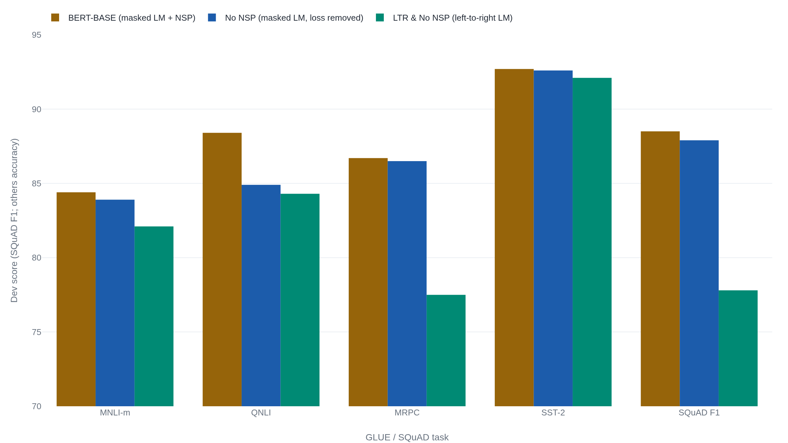
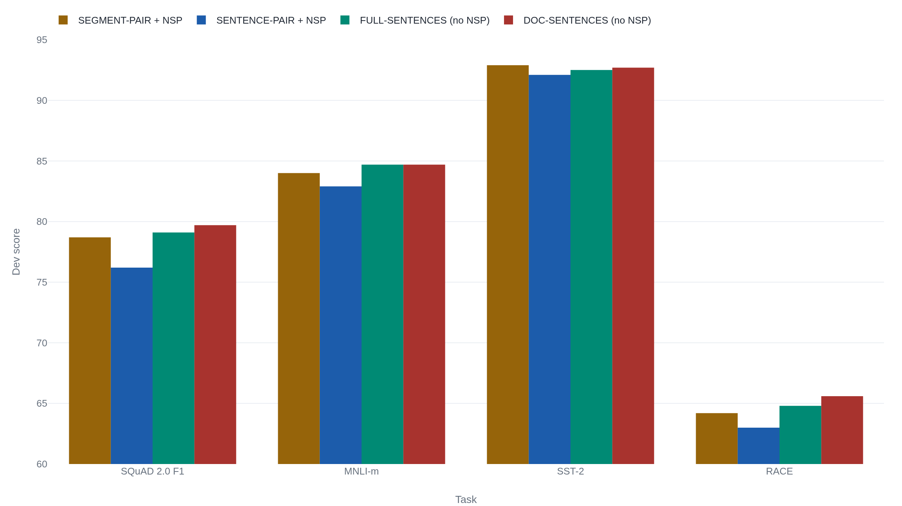
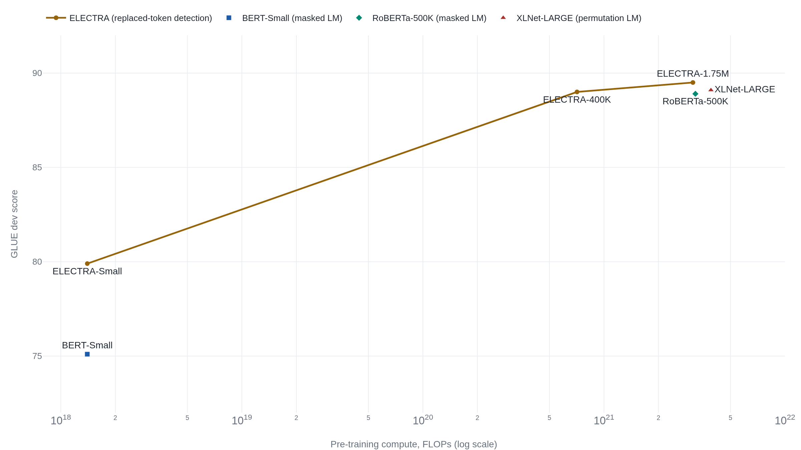

Dropping bidirectionality broke BERT where dropping its sentence task did not
The recipe became the field's default encoder, and the re-examination that followed kept its bidirectional masking while discarding the next-sentence loss BERT shipped beside it.
BERT: Pre-training of Deep Bidirectional Transformers for Language Understanding
Read the paperWe introduce a new language representation model called BERT, which stands for Bidirectional Encoder Representations from Transformers. Unlike recent language representation models (Peters et al., 2018a; Radford et al., 2018), BERT is designed to pre-train deep bidirectional representations from unlabeled text by jointly conditioning on both left and right context in all layers. As a result, the pre-trained BERT model can be fine-tuned with just one additional output layer to create state-of-the-art models for a wide range of tasks, such as question answering and language inference, without substantial task-specific architecture modifications. BERT is conceptually simple and empirically powerful. It obtains new state-of-the-art results on eleven natural language processing tasks, including pushing the GLUE score to 80.5% (7.7% point absolute improvement), MultiNLI accuracy to 86.7% (4.6% absolute improvement), SQuAD v1.1 question answering Test F1 to 93.2 (1.5 point absolute improvement) and SQuAD v2.0 Test F1 to 83.1 (5.1 point absolute improvement).1
Two ways to reuse a language model, and a third the paper proposed
By late 2018 the recipe of pre-train once, fine-tune everywhere already worked, and two versions of it led the field. OpenAI's GPT pre-trained a Transformer decoder as a standard language model, each token predicted from the tokens to its left, then fine-tuned the whole network per task.2 ELMo took the other road: it trained a forward and a backward LSTM language model, concatenated their internal states into contextual word vectors, and fed those frozen features into a task-specific model it trained from scratch.3 Each gave something up. GPT's token never sees its right context. ELMo's two directions are trained apart and joined only at the end, so no layer ever conditions on both sides at once.
BERT's bet was that one deep Transformer encoder could condition on left and right context jointly in every layer, and that the same pre-trained weights, fine-tuned with a single added output layer, would carry to a wide range of tasks.1 The bet came bundled with two training objectives and a data scale, and the years after publication spent their effort separating which part of the bundle did the work. The answers did not all favor the paper's own account.
Why the encoder has to be blindfolded to read both ways
Start with the objective BERT is defined against. GPT maximizes the left-to-right likelihood \mathcal{L}_{\text{LTR}} = \sum_{i} \log P(u_i \mid u_{i-k}, \dots, u_{i-1}; \Theta), where every token is scored from its predecessors alone.2 That factorization forbids the thing BERT wants. You cannot simply run the same model in both directions inside a deep stack. With right context available, a token at a lower layer leaks upward, and by the top layer each position can see itself. Predicting it becomes copying, not learning. BERT's answer is to hide the targets. Mask about 15% of the tokens and predict only those, from everything left unmasked on both sides.
- x_iA masked token, the label the encoder must reconstruct.
- x_{\setminus \mathcal{M}}The whole sequence with the masked positions hidden, the joint left-and-right context the prediction reads.
- i \in \mathcal{M}The sum runs over the masked set only, roughly one token in six.
Two features of that sum decide everything that follows. The conditioning set x_{\setminus \mathcal{M}} spans both sides of position i, the joint context the left-to-right likelihood above cannot express, which is the whole of what bidirectional means here. And the sum ranges over the masked set alone: with 15% of tokens masked, about 85% of positions produce no term in the loss and teach the encoder nothing on that example. The first feature is the source of BERT's gains. The second is the opening a later objective was built to exploit.
Masking creates one problem of its own. The
[MASK] symbol appears constantly during pre-training and
never during fine-tuning, so a model that keys its predictions to
seeing [MASK] would train for an input it will not meet
again. BERT's fix is to weigh the alternatives at the token level. Of
the tokens chosen for prediction, 80% are replaced with
[MASK], 10% with a random token, and 10% are left
unchanged. A flagged position is therefore not reliably corrupted, so
the encoder has to keep a real distribution over the identity of every
token it reads, not only the ones wearing the mask.1
One set of weights, eleven tasks
The durable claim is the transfer result. The same pre-trained encoder, fine-tuned with one added layer, set the state of the art on eleven tasks at once. On the GLUE leaderboard, a suite of nine English understanding tasks scored as one equal-weight average,4 BERT-LARGE reached 80.5 against GPT's 72.8, a jump of 7.7 points on the test server.1 That leaderboard figure is a different aggregation from the per-task average the paper prints in the same table, which excludes one small task and reads higher. The table below is that printed average. It is a test-set number, and it must never be lined up against the development-set scores the later ablations report.
| System | GLUE avg. | MNLI-m |
|---|---|---|
| Prior state of the art | 74.0 | 80.6 |
| OpenAI GPT | 75.1 | 82.1 |
| BERT-BASE | 79.6 | 84.6 |
| BERT-LARGE | 82.1 | 86.7 |
A leaderboard margin invites a suspicious reading: perhaps the encoder architecture, or a benchmark quirk, and not the pre-trained representation, is doing the work. BERT's feature-based test answers it inside a single model. Freeze the encoder, take no gradient into it, and feed its hidden layers as fixed features to a task model for named-entity recognition. Concatenating the last four layers reaches 96.1 development F1 on CoNLL-2003, against 96.4 for full fine-tuning.1 A gap of three tenths of a point between frozen and fine-tuned use is the ELMo comparison run without ELMo's shallow join. The representation itself carries the transferable signal, and the fine-tuning head is a convenience, not the source of the result.
The ablation that named the essential ingredient
BERT's own Section 5.1 puts the two training objectives on trial, and the verdict is already visible in the paper's Table 5. Take the full model and remove only the next-sentence loss, keeping the segment-pair input it was trained on. Almost nothing moves on the development set: MNLI-m slips 84.4 to 83.9, MRPC 86.7 to 86.5, SST-2 92.7 to 92.6. The one real cost is QNLI, 88.4 to 84.9. Now take the further step of replacing the masked-language model with a left-to-right one, the change that turns BERT back into a GPT-shaped model. The tasks that hinge on relating two spans fall through the floor.

Read the chart as a test between two accounts of bidirectionality. One holds that reading both directions is a modest accuracy tweak on top of a language model. The other holds that it is the thing the recipe rests on. The single change from masked to left-to-right conditioning costs nine points on MRPC and ten on SQuAD F1, while dropping the next-sentence loss costs a few tenths on most tasks. The second account wins, and the same figure plants a second finding the authors state more cautiously than their numbers warrant: the No-NSP row shows the auxiliary objective already paying almost nothing for its place.
The paper's own conclusion is that the next-sentence task helps, and on its evidence that is fair: with segment-pair inputs, removing the loss did cost a little, most of it on QNLI. The claim to watch is not that the loss did nothing in BERT's setup. It is whether the small gain survives a comparison BERT never ran.
What the next-sentence task was actually measuring
RoBERTa ran that comparison. It is a careful replication whose headline conclusion is that BERT was badly undertrained, and along the way it isolates the next-sentence loss on matched data in its Table 2. The result is easy to state carelessly and worth stating exactly, because the two no-loss configurations change two things, not one.

Here is the confound. BERT's No-NSP ablation kept the segment-pair input, two concatenated spans, and removed only the loss. RoBERTa's gain appears only once it also abandons segment pairing for a single contiguous span, the Full-Sentences and Doc-Sentences rows. The worst row in the figure is Sentence-Pair with the loss kept, built from short sentence pairs. So the defensible statement is narrow: the next-sentence loss is unnecessary once the input format is fixed, not that the loss does nothing in BERT's own segment-pair configuration. RoBERTa's flagship model changes at least five things together, from ten times the data to larger batches, so only this matched-data table, and not the headline score, carries the claim about the loss.
ALBERT supplies the reason the loss was weak. Its negatives are pairs drawn from different documents, so they differ in topic as well as in order, and topic is the easier signal, the one the masked-language objective already supplies. A head trained on the next-sentence task scores 52.0% on a pure sentence-order probe, indistinguishable from the coin flip, while a head trained on order alone reaches 86.5%.6 RoBERTa and ALBERT agree the loss as BERT specified it was weak; they part on the remedy. RoBERTa deletes the inter-sentence objective outright. ALBERT keeps one but rebuilds it as order prediction, and reports gains on multi-sentence tasks. The record supports the negative claim they share more firmly than either positive remedy.
Undertrained, not out-designed
RoBERTa's larger finding reframes a dispute BERT had left open. XLNet
had argued that a new objective, permutation language modeling that
sees both sides without a [MASK] token, was why it beat
BERT on twenty tasks, locating the gain in architecture.7
RoBERTa holds the architecture fixed and moves only the training. At
the same model size, feeding more data and then simply running more
steps lifts SQuAD 2.0 development F1 from 87.3 to 89.4, a curve that is
still climbing when the paper stops it at 500,000 steps.5
The single-task comparison then lands the point.
| Task | BERT-LARGE | XLNet | RoBERTa |
|---|---|---|---|
| MNLI | 86.6 | 89.8 | 90.2 |
| RTE | 70.4 | 83.8 | 86.6 |
| CoLA | 60.6 | 63.6 | 68.0 |
| SST-2 | 93.2 | 95.6 | 96.4 |
The competing account predicts XLNet's objective should hold a lead that a better-trained BERT cannot close. It does not hold. Trained on 160 gigabytes of text against BERT's 16, with the same encoder, RoBERTa beats BERT-LARGE on every task. The widest gaps fall on the data-starved ones, RTE by sixteen points and CoLA by seven, and it edges past XLNet as well. Most of the reported improvement over BERT relocates from architecture to training scale. BERT's published margins understate its own recipe, because the recipe was stopped early.
The bill for supervising one token in six
Return to the sum that defined the objective. Because it ranges over the masked set alone, a training example teaches the encoder about roughly 15% of its positions and wastes the rest. ELECTRA makes that waste its design target. It keeps a small generator to propose replacements, then trains the encoder as a discriminator that labels every input token as original or replaced, so the loss covers the whole sequence rather than the masked sixth.8 The claim to test is that learning from all tokens buys the same quality for less compute.

At equal compute the gap is plain: ELECTRA-Small scores 79.9 on GLUE development where a same-budget BERT-Small manages 75.1. At the top of the curve ELECTRA-400K reaches 89.0, level with a fully trained RoBERTa at 88.9 and XLNet at 89.1, using under a quarter of their pre-training FLOPs. The honest bound on this is that it is an efficiency result, not an accuracy ceiling. A masked-language model run long enough reaches the same GLUE score; it just pays several times the compute to get there. The inefficiency BERT's objective carries is real, and it is the size of a compute multiple, not a wall.
What survived and what did not
- Deep bidirectional masked-language pre-training with light fine-tuning transferred across eleven tasks and beat both the left-to-right (GPT) and frozen feature-based (ELMo) recipes.
- The pre-trained representation carries the signal: frozen features reach within three tenths of a point of full fine-tuning on NER.
- Bidirectionality is the choice the recipe depends on. Removing it costs nine to ten points on the tasks that relate two spans.
- The next-sentence claim did not survive a matched-data test. The defensible reading is only that the loss is unnecessary once the input format is fixed.
- BERT was undertrained, so its published margins understate the recipe and overstate the role of its architecture.
- Masking supervises about one token in six, an efficiency cost a successor cut to under a quarter of the compute.
The bidirectional masked-language encoder plus fine-tuning transfer was the field-defining contribution, and it holds. The next-sentence objective BERT shipped beside it did not: a controlled test retired the loss, and a coherence probe showed it was largely reading topic the masked objective already knew.6 Masking's sparse supervision was a real limit, bounded at a compute multiple rather than an accuracy gap.8 Two findings would move the assessment: a matched-data study that restored a benefit for an inter-sentence loss, or evidence that replaced-token detection's compute edge closes at the largest scales.
Sources
- ACL Anthology · Devlin, Chang, Lee & Toutanova, "BERT: Pre-training of Deep Bidirectional Transformers for Language Understanding" (NAACL 2019)
- OpenAI · Radford, Narasimhan, Salimans & Sutskever, "Improving Language Understanding by Generative Pre-Training" (2018)
- arXiv · Peters et al., "Deep contextualized word representations" (NAACL 2018)
- arXiv · Wang, Singh, Michael, Hill, Levy & Bowman, "GLUE: A Multi-Task Benchmark and Analysis Platform for Natural Language Understanding" (ICLR 2019)
- arXiv · Liu et al., "RoBERTa: A Robustly Optimized BERT Pretraining Approach" (2019)
- arXiv · Lan, Chen, Goodman, Gimpel, Sharma & Soricut, "ALBERT: A Lite BERT for Self-supervised Learning of Language Representations" (ICLR 2020)
- arXiv · Yang, Dai, Yang, Carbonell, Salakhutdinov & Le, "XLNet: Generalized Autoregressive Pretraining for Language Understanding" (NeurIPS 2019)
- arXiv · Clark, Luong, Le & Manning, "ELECTRA: Pre-training Text Encoders as Discriminators Rather Than Generators" (ICLR 2020)